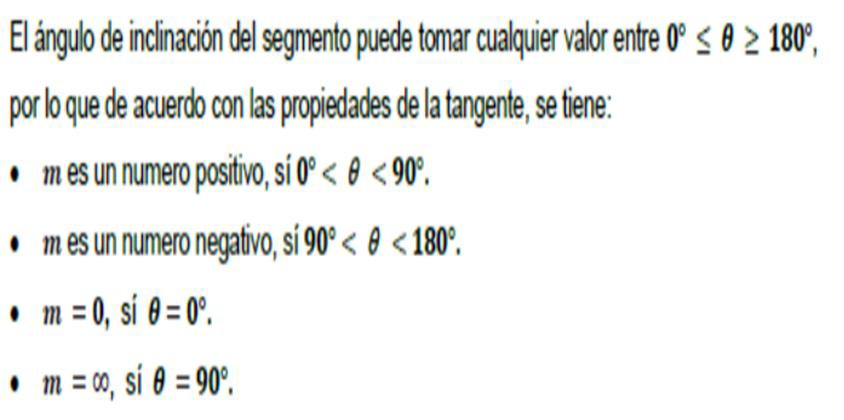
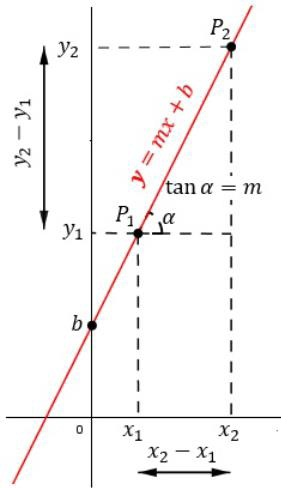

Ángulo de inclinación de una recta
El ángulo de inclinación de una recta, es el ángulo que se forma con la recta y
el eje de las abscisas(eje horizontal), en sentido contrario a las manecillas del reloj. Por lotanto, elángulo α, es denominada inclinación de la recta. Como semuestra en la figura.

Pendiente
La inclinación o pendiente de la recta es igual ala tangente del ángulo deinclinación, usualmente se denota con la letra "m".
Así la pendiente del segmento AB es, m=tan α dado que la función tangente del ángulo α , se obtiene dividiendo el cateto opuesto entre el cateto adyacente , se tiene que 𝒎=𝒚𝟐−𝒚𝟏/𝒙𝟐−𝒙𝟏
Se define como pendiente de una recta, m, a la tangente de su ángulo de inclinación. Siendo P1(x1, y1) yP2(x2, y2)dos puntos que pertenecen a la recta.
